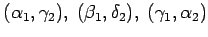
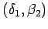
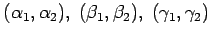
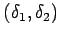
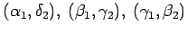
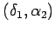

Beim Schnitt zweier paralleler Geraden p1,p2 durch eine dritte Gerade g treten acht Winkel auf.
Neben Scheitelwinkel und Nebenwinkel für Winkel mit gemeinsamem Scheitelpunkt S sind für Winkel mit verschiedenen Scheitelpunkten Wechselwinkel, Stufenwinkel und entgegengesetzt liegende Winkel zu unterscheiden.
| Beispiel |
|
In der Abbildung sind die Winkelpaare  und  Wechselwinkel. |
| Beispiel |
|
In der Abbildung sind die Winkelpaare  und  Stufenwinkel. |
| Beispiel |
|
In der Abbildung sind z.B. die Winkelpaare  und  entgegengesetzte Winkel. |